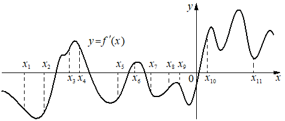

Opus100
Предварительные разборы, внешнего эталона нет.
На рисунке изображён график производной функции
На оси абсцисс отмечено одиннадцать точек: , , , , , , , , , , . Сколько из этих точек принадлежит промежуткам убывания функции ?

{
"complete": true,
"included": true,
"exclusion_reasons": [],
"author_mode": "standalone_initial",
"author_path": "data\\annotation\\runs\\2026-11-07-fipi-team-bogdan108-051-150\\raw\\author\\D143BD.json",
"auditor_path": "data\\annotation\\runs\\2026-11-07-fipi-team-bogdan108-051-150\\raw\\auditor\\D143BD.json",
"feedback_ref": null,
"source_run": "data/annotation/runs/2026-11-07-fipi-team-bogdan108-051-150"
}{
"task_id": "D143BD",
"solution_status": "solved",
"answer": "6",
"steps": [
{
"id": "s1",
"action": "Связать убывание f с знаком производной: f убывает там, где f'(x)<0 (график f' ниже оси абсцисс).",
"result": "Нужно подсчитать отмеченные точки, в которых график f' лежит ниже оси Ox.",
"kc_ids": [
"kc1"
],
"input_refs": [
"condition"
]
},
{
"id": "s2",
"action": "По рисунку определить знак f' в каждой из отмеченных точек.",
"result": "f'<0 в x1, x2, x5, x7, x8, x9; f'>0 в x3, x4, x6, x10, x11. Количество: 6.",
"kc_ids": [
"kc2"
],
"input_refs": [
"condition",
"s1"
]
}
],
"kc_candidates": [
{
"id": "kc1",
"name": "Определять промежутки монотонности функции по знаку производной",
"description": "Вход: функция с известным знаком производной на промежутке. Операция: f'>0 — возрастание, f'<0 — убывание. Граница: точки, где производная определена."
},
{
"id": "kc2",
"name": "Считывать знак функции по её графику в заданных точках",
"description": "Вход: график функции и отмеченные точки на оси абсцисс. Операция: определить, лежит ли график выше или ниже оси в каждой точке."
}
],
"methods": [
{
"id": "m1",
"name": "Подсчёт точек с отрицательной производной по графику f'",
"step_ids": [
"s1",
"s2"
]
}
],
"warnings": []
}{
"task_id": "D143BD",
"catalog_version": "fipi50-editorial-v1-frozen",
"decisions": [
{
"local_kc_id": "kc1",
"status": "match",
"catalog_kc_id": "derivative_monotonicity",
"evidence": [
{
"ref": "step:s1:action",
"quote": "f убывает там, где f'(x)<0"
}
],
"context_refs": [
"condition"
],
"alternatives_checked": [
{
"catalog_kc_id": "local_extreme_sign",
"reason": "речь о промежутках убывания, а не о типе экстремума по смене знака"
},
{
"catalog_kc_id": "literal_9aee0783618d",
"reason": "считывание знака по графику выполнено отдельно в s2"
}
],
"rationale": "Операция: вывод о монотонности (убывании) исходной функции f по знаку производной (f'<0). Знак производной устанавливается в s2; s1 фиксирует связь знак→монотонность, что вместе соответствует определению derivative_monotonicity.",
"proposal": null,
"blocking": false,
"issue_ids": []
},
{
"local_kc_id": "kc2",
"status": "match",
"catalog_kc_id": "literal_9aee0783618d",
"evidence": [
{
"ref": "step:s2:action",
"quote": "По рисунку определить знак f' в каждой из отмеченных точек."
},
{
"ref": "step:s2:result",
"quote": "f'<0 в x1, x2, x5, x7, x8, x9; f'>0 в x3, x4, x6, x10, x11"
},
{
"ref": "image:assets/8e24649191cc9d0a55ed1fa3.png",
"region_description": "График y=f'(x) с пунктирами от x1..x11 к кривой: в x1, x2, x5, x7, x8, x9 кривая ниже оси Ox; в x3, x4, x6, x10, x11 выше"
}
],
"context_refs": [
"step:s1:result"
],
"alternatives_checked": [
{
"catalog_kc_id": "graph_coordinates",
"reason": "требуются не координаты по сетке, а только положение графика относительно оси"
},
{
"catalog_kc_id": "literal_6ad8f502588e",
"reason": "не проверка принадлежности промежутку по границам, а чтение знака в точках"
}
],
"rationale": "Действие: определить по графику производной, выше или ниже оси он в отмеченных точках — совпадает с определением узла (смена знака в нулях здесь не требуется, но это часть определения, не противоречащая). Авторское описание обобщено на любую функцию, в задаче объект — график f'. Проверка по рисунку подтверждает 6 точек.",
"proposal": null,
"blocking": false,
"issue_ids": []
}
],
"issues": [],
"review_scope": "KC mapping with incidental mathematical checks; not expert validation"
}[]
{
"included": true,
"exclusion_reasons": [],
"source_policy_included": true,
"source_policy_exclusion_reasons": []
}